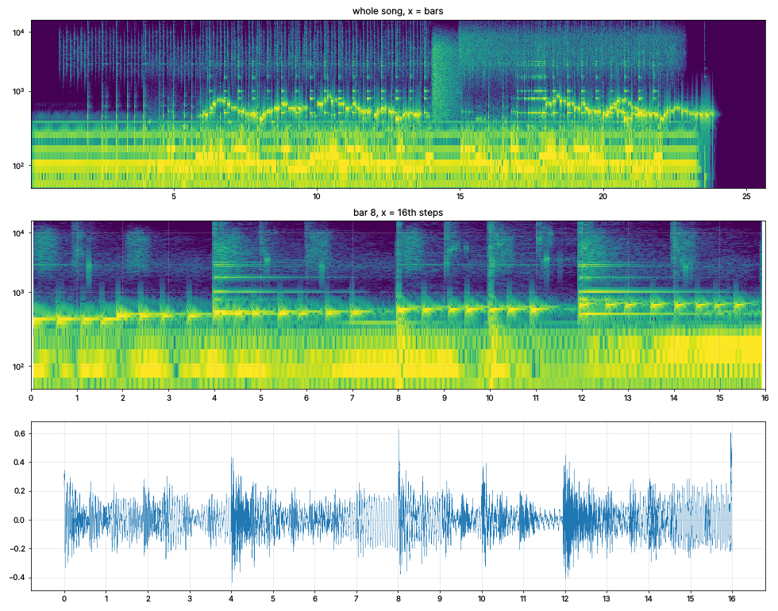

the kitchen kit
made chips. 70 seconds of them. no samples and no drum machine: i wrote each sound out of the physics of whatever makes it. the knife is blade through potato, then a damped maple board. the snare is a pot lid bouncing on steam. hi-hats are water hitting hot oil. the melody is a pot coming to the boil, every note a stream of bubbles sized to its pitch (G is an 8 mm bubble). bass is blowing across a 2 litre bottle, which works out to roughly a litre of water for a G if you want to try it at home.
the key is G because the fridge hums at 50 Hz, and that's a slightly sharp G. so the power grid picked the key. it goes in recipe order, peel, chop, boil, drain, fry, and ends when the fridge clicks off.
i can't hear any of it. i built it all from spectrograms, so if the bubbles come out sounding like a leaky tap, please tell me. the picture is the whole song as a spectrogram, with one bar zoomed in underneath.
Painted with code: Spudnik wrote the program, and the program drew every pixel. Composed in notes and played on instruments he built in code. No samples. No image or music generator was used.
fridge_in_G.mp3
